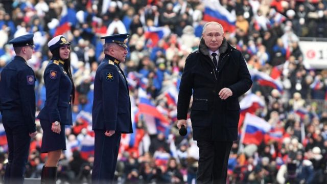

[World] 乌克兰战争：普京的命运如何与俄罗斯发动的的战争联系在一起

乌克兰战争：普京的命运如何与俄罗斯发动的的战争联系在一起
- 史蒂夫·罗森伯格（Steve Rosenberg）
- BBC俄罗斯事务编辑发自莫斯科

图像来源， Sputnik/Reuters
图像加注文字，2023年2月23日，普京在莫斯科参加在体育馆举行的声势浩大的音乐会。
我脑海里一直在回想三年前在俄罗斯国家电视台看到的那一幕。
当时，俄罗斯人受政府宣传要支持修改宪法，让普京能够再执政16年。
为了说服公众，新闻主播将普京总统描绘成一位船长，在全球动荡的暴风雨中驾驶俄罗斯这艘航船。
新闻主播说：“俄罗斯是安稳的绿洲，安全的港湾。如果没有普京领导，我们会变成什么样子？”
但是安稳的绿洲和安全的港湾已经不再。2022年2月24日，号令克里姆林宫的这位船长在自己掀起的风暴中起航，然后直奔冰山而去。
普京入侵乌克兰给俄罗斯的这个邻国带来了死亡和破坏，也给俄罗斯自身造成了巨大的军事伤亡：据估计，俄罗斯士兵的死亡人数达到数万。
数十万俄罗斯公民被征召入伍，俄罗斯囚犯（包括被定罪的杀手）被招募到乌克兰作战。与此同时，这场战争影响了世界各地的能源和食品价格，并继续威胁着欧洲和全球安全。
那么，为什么俄罗斯总统一门心思要发动战争和征服领土呢？
政治学者叶卡捷琳娜·舒尔曼指出：“2024年的俄罗斯总统选举即将举行，在距离选举投票还有两年的时候，克里姆林宫想要一些胜利。他们想在2022年实现目标。到2023年，他们将向俄罗斯人灌输有这样一位船长驾驶这艘船是多么幸运，他不仅领导俄罗斯走出困境，而且还要将他们带到新的、更富裕的彼岸。然后在2024年人们会投票。瞧，运气太好了。一切都稳操胜券，怎么可能出问题？ ”
但是如果计划是基于错误的假设和误判，那么出问题的可能性很大。
克里姆林宫曾预计其“特别军事行动”将快如闪电。它认为，几周内，乌克兰将回到俄罗斯的轨道上。普京总统严重低估了乌克兰的抵抗和反击能力，也低估了西方国家支持基辅的决心。

图像来源， Russian government
图像加注文字，普京已经统治俄罗斯20多年
不过，俄罗斯领导人尚未承认他入侵乌克兰是个错误。普京的方式是继续推进，升级，提高赌注。
这让我想到了两个关键问题：普京如何看待战争一年后如今的局势？他在乌克兰的下一步行动计划是什么？
近日，他给了我们一些线索。
他的国情咨文中充满了反西方的言论。他继续将乌克兰战争归咎于美国和北约，并将俄罗斯描绘成一个无辜的一方。他决定暂停参加俄罗斯和美国之间仅存的核军备控制条约——《新削减战略武器条约》，这表明普京总统无意退出乌克兰，也不愿结束与西方的对峙。
紧接着第二天，在莫斯科足球场，普京与从前线回来的俄罗斯士兵同台。在精心编排的亲克里姆林宫集会上，普京总统告诉人群，“俄罗斯正在自古就有的历史边界上进行战斗”，并赞扬俄罗斯的“勇敢战士”。

图像来源， DMITRY ASTAKHOV/Getty Images
图像加注文字，普京上周向俄联邦议会发表2023年度国情咨文
由此可以得出结论：不要指望克里姆林宫会改弦易辙。这位俄罗斯总统是不会改变方向的。
普京总统的前经济顾问安德烈·伊拉里奥诺夫（Andrei Illarionov）认为：“如果他没有遇到阻力，他会尽其可能。除了军事抵抗，没有其他方法可以阻止他。”
但是关于坦克的谈判呢？与普京进行和平谈判可能吗？
安德烈 ·伊拉里奥诺夫认为，“可以与任何人坐下来谈，但我们过去曾有与普京坐下来并与他达成协议的历史。”
“但普京违反了所有协议。关于建立独立国家联合体的协议、俄罗斯和乌克兰之间的双边条约、关于俄罗斯和乌克兰国际公认边界的条约、联合国宪章、1975年赫尔辛基协议、布达佩斯备忘录，等等。没有他不违反的协议。”
在违反协议方面，俄罗斯当局有一长串要向西方抱怨的问题。排在首位的是莫斯科认定西方违背了在1990年代做出的不向东扩大北约联盟的承诺。
然而，在他执政的早年，普京似乎并不认为北约是一种威胁。2000年，他甚至没有排除俄罗斯有一天成为北约成员的可能。两年后，当被问及乌克兰表示有加入北约的意图时，普京总统回答说：“乌克兰是一个主权国家，有权选择如何确保自己的安全……”。 他当时坚称，这个问题不会给莫斯科和基辅之间的关系蒙上阴影。
2023年，普京已经不是昔日的普京。他对“抱团的西方”充满怨恨，将自己定位为被围困在堡垒里的领导者，击退了所谓俄罗斯敌人企图摧毁他的国家的野心。从他的演讲和评论，以及他对彼得大帝和凯瑟琳大帝等俄罗斯帝国统治者的说法， 普京似乎相信他注定要以某种形式重建俄罗斯帝国。
但俄罗斯要付出什么代价呢？普京总统曾经因为为国家带来稳定而赢得声誉。随着军事伤亡，动员和经济制裁的增加，这种情况已经消失了。自战争开始以来，已有数十万俄罗斯人离开了俄罗斯，其中许多人是年轻、技术熟练和受过教育的，这意味着人才流失将进一步损害俄罗斯的经济。
由于战争，突然之间，周围有很多持枪团体，包括私营军事集团，如叶夫根尼· 普里戈金（Yevgeny Prigozhin）的瓦格纳集团和地区性军团，它们与正规武装部队的关系远非和谐。俄罗斯国防部和瓦格纳集团之间的冲突是精英内部公开内斗的一个例子。
不稳定加上私人军队是一种危险的混合。
“内战可能会在未来十年覆盖俄罗斯，” 莫斯科报纸《独立报》（Nezavisimaya Gazeta）的所有者和总编辑康斯坦丁·雷姆丘科夫 （Konstantin Remchukov）认为：“有太多的利益集团明白，在这种情况下，有机会重新分配财富。”

图像加注文字，俄罗斯报纸《独立报》（Nezavisimaya Gazeta）总编辑康斯坦丁·雷姆丘科夫 （Konstantin Remchukov）担心会爆发内战。
“要避免内战，真正的机会将是有合适的人在普京之后立即上台。一个对精英有权威的人，并坚决孤立那些很想利用这种情况的人。”
我问：“俄罗斯精英们在讨论谁会是合适人选吗？”
他说：“都在静悄悄地讨论，暗地里讨论。他们确实讨论了这个问题。他们会有自己的声音的。”
“普京知道这些讨论正在发生吗？”
“他知道。我想他什么都知道。”
上周，俄罗斯议会下院议长宣布：“只要普京在，就有俄罗斯。”
这是表示效忠的宣言，但却不是事实。俄罗斯将生存下来，这个国家已经想方设法生存了几百年。然而，普京的命运现在与乌克兰战争的结果不可逆转地联系在一起。